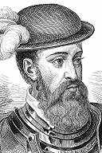

|
|
66 FRANCISCO PIZARRO ±
1475-1541
Si
buta huruf orang Spanyol, Fransisco Pizarro ini lahir
sekitar tahun 1475 di kota Trujillo, Spanyol. Biar buta
huruf, dialah orang yang menaklukkan kerajaan Inca di Peru.
Seperti halnya Hernando Cortes yang banyak sekali kemiripan
dengannya, Pizarro mendarat di Dunia Baru mencari
kemasyhuran dan adu nasib. Dari tahun 1502 sampai 1509
Pizarro tinggal di Hispaniola, kepulauan Karibia, di daerah
yang kini termasuk Republik Dominika dan Haiti. Tahun 1513
dia menjadi anggota ekspedisi di bawah pimpinan Vasco Nunez
de Balboa, yang menemukan Samudera Atlantik. Tahun 1519 dia
menetap di Panama. Dari tahun 1522, tatkala Pizarro
menginjak umur empat puluh tujuh tahun, tahulah dia bahwa
sebuah kerajaan Inca dari seorang penjelajah Spanyol Pascual
de Andagoya yang pernah mengunjunginya. Pizarro, didorong
oleh ilham penaklukan Mexico oleh Hernando Cortes, bertekad
menaklukkan Kerajaan Inca.
Percobaan pertamanya tahun 1524-1525 mengalami kegagalan
dan dua kapalnya terpaksa putar haluan sebelum menjamah
Peru. Percobaan keduanya tahun 1526-1528 dia berhasil
menjejakkan kaki di pantai Peru dan memboyong pulang emas,
llamas, dan orang-orang Indian.
Tahun 1528 dia kembali ke Spanyol. Di sana, tahun
berikutnya, Raja Charles V memberi kuasa kepadanya
menaklukkan Peru buat kepentingan Spanyol dan
memperlengkapinya dengan dana dan segala yang perlu buat
ekspedisi itu. Pizarro balik ke Panama dan mempersiapkan
ekspedisi. Ekspedisi itu berlayar dari Panama tahun 1531.
Waktu itu umur Pizarro sudah masuk lima puluh lima tahun.
Kekuatan yang terhimpun dalam ekspedisi itu kurang dari 200
orang sedangkan kerajaan Inca yang akan ditaklukkannya
berpenduduk tidak kurang dari enam juta orang!
Pizarro mendarat di Peru tahun berikutnya. Bulan
September 1532, hanya dengan membawa 177 orang dan 62 kuda,
dia menyerbu masuk daratan. Dengan pasukan yang begitu kecil
Pizarro mendaki pegunungan Andes yang menjulang tinggi
dengan tujuan kota Cajamarca, kedudukan penguasa
Inca-Atahualpa --yang punya kekuatan 14.000 prajurit.
Tentara "liliput" Pizarro sampai di Cajamarca bulan Nopember
tanggal 15 tahun 1532. Tahun berikutnya, atas permintaan
Pizarro, Atahualpa meninggalkan sejumlah besar tentaranya
dan hanya dengan dikawal oleh sekitar 5.000 pengikut
setianya yang tak bersenjata. datang berunding dengan
Pizarro.
Tingkah laku Pizarro membingungkan meskipun selayaknya
Atahualpa sudah bisa menangkap gelagatnya. Terhitung sejak
orang-orang Spanyol itu menginjakkan kaki di pantai, mereka
tanpa tedeng aling-aling sudah menunjukkan maksud jahatnya
dan kekasarannya. Oleh sebab itu hampir tak masuk akal apa
sebab Atahualpa mengijinkan pasukan Pizarro mendekati
Cajamarca tanpa hambatan. Kalau saja orang-orang Indian
melabrak Pizarro di jalan jalan sempit lereng gunung yang
sudah pasti pasukan kuda Pizarro tak punya daya, pastilah
mereka dengan mudah membabat habis orang-orang Spanyol.
Sikap Atahualpa sesudah Pizarro sampai di Cajamarca juga
amat mengherankan. Menghampiri pasukan yang jelas-jelas
ganas sementara dia sendiri tak bersenjata, betul-betul
suatu tindakan gegabah dan tolol. Misteri ini makin
menjadi-jadi mengingat taktik kebiasaan orang Inca adalah
melakukan serangan mendadak.
Pizarro karuan saja tidak menyia-nyiakan peluang emas
ini. Dia perintahkan pasukannya melabrak Atahualpa berikut
pengawalnya yang tak bersenjata samasekali. Pertempuran
--atau lebih tepatnya penjagalan--berlangsung hanya sekitar
setengah jam saja. Tak seorang serdadu Spanyol pun terbunuh.
Yang terluka justru Pizarro sendiri yang tergores sedikit
akibat dia melindungi Atahualpa yang dapat ditangkapnya
hidup-hidup.
Strategi Pizarro berjalan sempurna. Kerajaan Inca punya
sistem struktur terpusat, semua kekuasaan terpancar dari
Inca atau Kaisar yang dianggap sebagai setengah dewa. Dengan
tertangkapnya Inca sebagai tawanan, orang-orang Indian tak
berdaya menahan serbuan Spanyol. Dengan harapan bisa kiranya
memperoleh kemerdekaan kembali, Atahualpa membayar Pizarro
sejumlah besar emas serta perak yang harganya mungkin lebih
dari $28 juta. Tetapi, hanya dalam beberapa bulan kemudian
dia dihukum mati oleh Pizarro. Bulan November tahun 1533,
setahun sesudah Atahualpa tertangkap, pasukan Pizarro masuk
Cuzco, ibukota Inca, tanpa pertempuran sedikit pun. Di sana,
Pizarro mengangkat seorang raja boneka. Tahun 1535 dia
menemukan kota Lima yang jadi ibukota Peru.
Tahun 1536, raja Inca boneka melarikan diri dan memimpin
pemberontakan melawan Spanyol terkepung di Lima dan Cuzco.
Sesudah itu Spanyol berusaha keras memulihkan pengawasannya
atas seluruh negeri di tahun berikutnya, tetapi baru tahun
1572 pemberontakan betul-betul bisa tertumpas. Sesudah itu
matilah Pizarro.
Kemerosotan bintang Pizarro mulai tampak ketika
orang-orang Spanyol baku hantam sesamanya. Salah seorang
teman dekat Pizarro, Diego de Almargo, memberontak di tahun
1537 menuntut Pizarro tidak membagi adil barang rampasan.
Almargo ditangkap dan dihukum mati. Tetapi, kematian ini
tidaklah menyelesaikan soal. Isyu-isyu tentang ini menyebar
terus sehingga di tahun 1541 kelompok pendukung Almargo
menyerbu istana Pizarro di Lima dan membunuh pemimpin itu
yang usianya sudah enam puluh lima tahun, hanya delapan
tahun sejak dia menduduki Cuzco dengan kemenangan
gemilang.
Fransisco Pizarro seorang pemberani, percaya kepada diri
sendiri, dan kaku. Diukur dari mentalnya, dia seorang
beragama, dikabarkan Pizarro tatkala sekarat melukis gambar
salib dengan darahnya dan kalimat terakhir yang keluar dari
mulutnya adalah "Yesus". Sebaliknya, dia pun serakah bukan
main, kejam, ambisius, dan licik; mungkin penakluk Spanyol
yang paling brutal.
Tetapi, kekasaran Pizarro janganlah menutup mata atas
kesuksesannya di bidang militer. Ketika tahun 1967 Israel
peroleh kemenangan dramatis atas Arab yang jumlahnya jauh
lebih besar dibanding Israel sendiri dan persenjataannya pun
lebih lengkap, banyak orang terbengong-bengong. Kemenangan
itu betul mengesankan. Tetapi, sejarah penuh dengan kisah
kemenangan militer oleh pasukan kecil menghadapi pasukan
yang iauh lebih besar. Napoleon dan Alexander Yang Agung
berulang kali memenangkan pertempuran melawan musuh yang
berlipat lebih besar jumlahnya. Orang-orang Mongol di bawah
penakluk Jengis Khan mampu menaklukkan Cina, negeri yang
berpenduduk tiga puluh kali lebih besar dari bangsa
Mongol.
Tetapi, Pizarro menaklukkan sebuah kerajaan yang
berpenduduk lebih dari enam juta hanya dengan pasukan 180
prajurit memang benar-benar suatu kejadian mencengangkan
dalam sejarah. Apa yang diperbuatnya itu lebih hebat dari
Cortes yang dengan 800 prajurit menaklukkan negeri yang
berpenduduk sekitar lima juta. Bahkan, mungkinkah Jengis
Khan atau Alexander Yang Agung mengungguli Pizarro? Saya
ragu, karena mereka tidak punya kenekadan melakukan
penaklukan gila-gilaan seperti itu.
Tetapi, tentu orang bisa saja bertanya: bukankah Spanyol
punya senjata api yang membantu keunggulan taktiknya? Sama
sekali tidak. Arquebuses, senjata api primitif masa itu yang
cuma punya daya tembak jarak pendek dan memerlukan banyak
waktu mengisi mesiunya. Kendati memang menimbulkan suara
yang menakutkan, sebenarnya senjata macam begitu masih kalah
ampuh ketimbang panah yang bagus. Pada suatu saat tatkala
Pizarro menerobos masuk Cajamarca, cuma tiga prajuritnya
yang genggam senjata api arquebuses dan tak lebih dari dua
puluh punya busur berikut anak panahnya. Umumnya orang-orang
Indian terbunuh dengan senjata konvensional seperti pedang
dan tombak. Selain cuma memiliki sedikit kuda dan senjata
api, jelas sekali orang-orang Spanyol melibatkan diri dalam
konflik dalam posisi yang secara militer amat tidak
menguntungkan. Adalah kepemimpinan dan tekad baja dan
bukannya senjata yang menjadi faktor utama kemenangan
Spanyol. Tentu saja, nasib baik memang berpihak pada Pizarro
tetapi seperti kata pepatah "Keberuntungan senantiasa berada
pada pihak yang berani."
Fransisco Pizarro dikecam oleh beberapa penulis tak
ubahnya sebagai seorang jagal yang beringas. Andaikata toh
begitu, dia termasuk sedikit dari jagal-jagal yang punya
pengaruh dalam sejarah. Kerajaan yang ditumbangkannya
menguasai daerah seluas Peru dan Ecuador sekarang, begitu
juga separoh dari bagian utara Chili dan sebagian Bolivia.
Penduduknya sedikit lebih banyak dari sisa penduduk seluruh
Amerika Selatan digabung jadi satu. Sebagai akibat
penaklukan Pizarro agama dan kebudayaan Spanyol tertanam di
seluruh daerah. Lebih jauh dari itu, sesudah jatuhnya
kerajaan Inca, tak satu pun bagian Amerika Selatan lain yang
mampu bertahan terhadap penaklukan bangsa Eropa.
Berjuta-juta bangsa Indian masih berdiam di Amerika Selatan,
tetapi di sebagian besar benua itu orang-orang Indian tak
pernah lagi bisa pegang peranan politik. Bahasa Eropa,
agamanya, kebudayaannya, tetap dominan.
Cortes dan Pizarro, masing-masing cuma memimpin pasukan
kecil, berhasil dengan cepat menumbangkan kerajaan Aztec dan
Inca. Peristiwa ini membikin banyak orang memperhitungkan
bahwa penaklukan Mexico dan Peru oleh orang-orang Eropa tak
bisa dicegah lagi. Kenyataannya, kerajaan Aztec tak punya
kesempatan mempertahankan kemerdekaannya. Letak kedudukan
(dekat Teluk Mexico dan tak berjauhan dari Kuba) terbuka
buat penyerangan bangsa Eropa. Bahkan andaikata pun Aztec
berhasil memukul pasukan Cortes yang kecil itu, tentara
Spanyol dalam jumlah yang lebih besar pasti segera akan
datang menyusul.
Kerajaan Inca, di lain pihak, punya posisi bertahan yang
lebih menguntungkan. Satu-satunya perbatasan samudera
hanyalah Pasifik yang lebih sulit dimasuki ketimbang
Atlantik. Inca punya tentara berjumlah besar, berpenduduk
banyak dan terorganisir rapi. Lebih dari itu medan Peru tak
rata dan bergunung-gunung, dan di banyak bagian dunia,
kekuatan kolonial Eropa biasanya menghadapi kesulitan
menaklukkan daerah pegunungan. Bahkan di akhir abad ke-19
sewaktu persenjataan Eropa jauh lebih maju dibanding yang
mereka miliki di abad ke-16, percobaan Italia menaklukkan
Ethiopia tidak berhasil. Hal serupa menimpa juga Inggris
yang nyaris menghadapi kesulitan tak habis-habisnya
menghadapi suku-suku di pegunungan barat laut perbatasan
India. Dan orang-orang Eropa tak pernah mampu menjajah
negeri berpegunungan seperti Nepal, Afganistan dan Iran.
Kalau saja penaklukan Pizarro gagal, dan kalau saja orang
Inca punya sedikit pengetahuan tentang persenjataan dan
taktik orang Eropa, mereka akan mampu melawan kekuatan Eropa
yang datang belakangan. Sedangkan dalam keadaan seperti
begitu, Spanyol memerlukan waktu tiga puluh enam tahun
menumpas pemberontakan orang Indian di tahun 1536, kendati
orang Indian cuma memiliki sedikit senjata api dan tak pemah
sanggup menghimpun lebih dari pasukan-pasukan kecil sebelum
penaklukan Pizarro. Spanyol akan dapat menaklukkan Kerajaan
Inca bahkan tanpa Pizarro sekalipun, tetapi perkiraan itu
tampaknya jauh dari pasti.
Jadi Pizarro ditempatkan sedikit lebih tinggi daripada
Cortes dalam daftar urutan buku ini. Cortes mendorong
lajunya sejarah, Pizarro mungkin sekali mengubah jalan
arusnya.
Situs Web
- http://encarta.msn.com/media_461515415_761571358_-1_1/Francisco_Pizarro.html
|